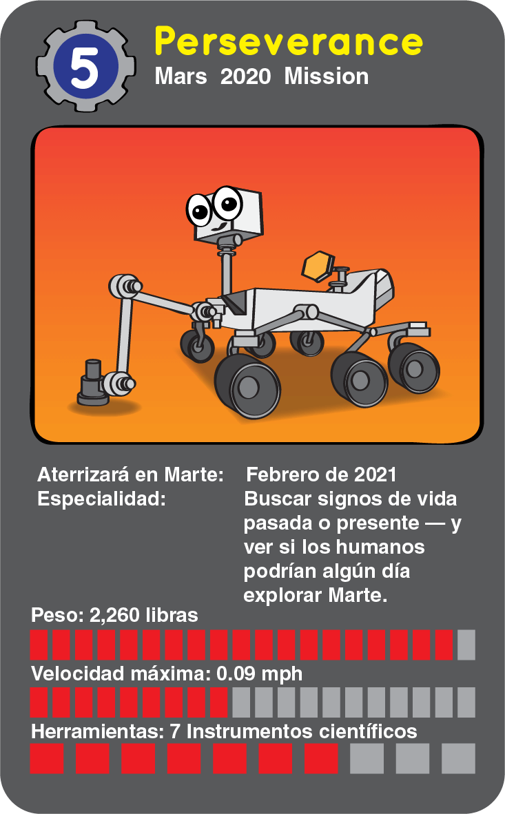

Los Rovers de Marte
Marte es un planeta fascinante. Esta frío, helado y cubierto de polvo rojizo y la suciedad. Como Tierra, tiene volcanes, barrancos y llanuras planas. Los científicos también pueden ver canales que parecen tallados por ríos y arroyos hace mucho, mucho tiempo. Con los años, hemos enviado cuatro vehículos robotizados, o rovers, para aprender más sobre Marte. ¡Y los científicos de la NASA planean enviar uno más en pocos años!. Desde la década de 1970, los científicos han estado enviando naves espaciales a Marte. Varios tipos diferentes de naves espaciales han sido enviados al Planeta Rojo a través de los años, y todos ellos tienen diferentes especialidades. Un tipo, llamado órbita, orbita Marte, tomando fotos mientras hace zoom alrededor del planeta. Otras naves espaciales, llamadas landers, generan fotos e información desde sus puntos de aterrizaje en la superficie de Marte. Los Rovers tienen ruedas y se especializan en moverse. Aterrizan en la superficie de Marte y conducen alrededor de los diversos puntos. Rovers ayudan a los científicos en su búsqueda para entender de que las diferentes partes del planeta están hechas. Marte se compone de un montón de diferentes tipos de rocas, y cada roca se compone de una mezcla de productos químicos. Un rover puede conducir alrededor a diversas áreas, estudiando los diversos productos químicos en cada roca. Estos químicos pueden decir a los científicos algo sobre los ambientes que cambiaron esa roca con el tiempo
Menú de navegación interna
Sojourner
En 1997, los científicos de la NASA hicieron algo bastante sorprendente. Por primera vez, utilizaron un robot de ruedas pequeñas para estudiar la superficie de Marte. Este explorador robótico, llamado rover, fue nombrado Sojourner. Sólo tenía el tamaño de un horno de microondas. Sin embargo, pasó a compartir mucha información nueva importante con los científicos. Sojourner no estaba solo durante su viaje a Marte. Viajó dentro de una nave espacial, un aterrizador. El aterrizador tenía forma de pirámide y estaba cubierto de bolsas de aire. Los airbags ayudaron a que el aterrizador tenga un aterrizaje seguro y lleno de baches. La forma de la pirámide ayudó a asegurar que el aterrizador y el rover pudieran voltearse hacia la derecha, independientemente de cómo aterrizaran. Después de que el aterrizador aterrizó en Marte, un panel se abrió y Sojourner salió para comenzar a explorar. El rover exploró una zona de Marte cerca de su lugar de aterrizaje llamado Ares Vallis. Los científicos estaban interesados en esta área porque parecía el sitio de una antigua inundación. El agua que corría de una inundación habría movido muchas rocas y suciedad en un solo lugar. Esto significa que el rover podría estudiar un montón de diferentes tipos de rocas sin viajar muy lejos. A los ingenieros también les gustó el área porque parecía un lugar plano y seguro para Sojourner.
Spirit y Opportunity
Después del éxito del rover Sojourner, la NASA quería enviar más rovers para aprender sobre Marte. Así, en 2003, enviaron dos rovers al Planeta Rojo. Los rovers fueron nombrados Spirit y Opportunity. Juntos, formaron parte de la misión Mars Exploration Rover. Spirit y Opportunity fueron hechos como gemelos. Ambos portaban todos los mismos instrumentos científicos. Y cada uno era aproximadamente del tamaño de un carrito de golf. On Tierra, donde hay agua, hay vida. Spirit y Opportunity fueron enviados a Marte para encontrar más pistas sobre la historia del agua allí, y para ver si el Planeta Rojo podría haber tenido formas de vida. Para hacer esto, los científicos enviaron a los dos rovers a dos sitios de aterrizaje diferentes. Los rovers aterrizaron en lados opuestos del planeta. Spirit aterrizó en una región llamada cráter Gusev. Los científicos querían explorar el cráter porque pensaban que podría haber aguantado agua hace mucho tiempo. Segun fotos tomados por los satélites, los científicos pensaron que parecía que varios ríos grandes fluyeron en el cráter de Gusev. Opportunity aterrizó en el otro lado de Marte en un área llamada Meridiani Planum. Esta región era agradable porque era un lugar plano y seguro para el rover. También, estudios con un satélite alrededor de Marte mostraron que podría contener un mineral llamado hematita gris. En la Tierra, la hematita gris frecuentemente se ubica en presencia de agua.
Curiosity
En la Tierra, donde hay agua, hay seres vivos. Sabemos que Marte tenía agua hace mucho tiempo. ¿Pero también tenía otras condiciones necesarias de vida? Para averiguarlo, la NASA envió el rover Curiosity a Marte. Curiosity es el robot más grande aterrizado en otro planeta. Es del tamaño de un pequeño todoterreno. Debido a que Curiosity es tan grande, también tiene ruedas más grandes que los rovers anteriores. Esto le ayuda a rodar sobre las rocas y la arena sin quedar atascado. Sin embargo, en un largo día de conducción, sólo viaja unos 660 pies. La curiosidad aterrizó en Gale Crater. Este cráter es especial porque tiene una montaña alta en el medio. La montaña tiene muchas capas de roca. Cada capa está hecha de diferentes minerales de diferentes períodos de tiempo. Estos minerales podrían decir a los científicos acerca de la historia del agua en Marte. El rover utiliza muchos instrumentos científicos para estudiar las rocas en el cráter Gale. Curiosity usó su taladro para hacer un agujero en una roca que alguna vez fue barro en el fondo de un lago. Uno de sus otros instrumentos estudió el polvo perforado de la roca. Esta información ayudó a los científicos a aprender que el cráter de Gale tenía componentes que la vida antigua habría necesitado para sobrevivir.
Perseverance
